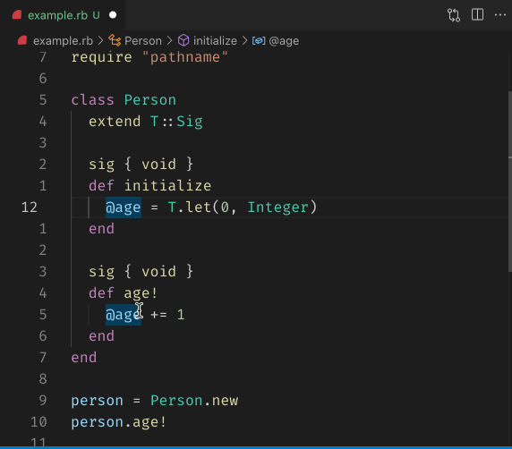

class RubyLsp::Requests::DocumentHighlight

The document highlight informs the editor all relevant elements of the currently pointed item for highlighting. For example, when the cursor is on the F of the constant FOO, the editor should identify other occurrences of FOO and highlight them.
For writable elements like constants or variables, their read/write occurrences should be highlighted differently. This is achieved by sending different “kind” attributes to the editor (2 for read and 3 for write).
Example¶ ↑
FOO = 1 # should be highlighted as "write" def foo FOO # should be highlighted as "read" end
Constants
- CLASS_VARIABLE_NODES
- CONSTANT_NODES
- CONSTANT_PATH_NODES
- GLOBAL_VARIABLE_NODES
- INSTANCE_VARIABLE_NODES
- LOCAL_NODES
- ResponseType
Attributes
_response[R]
Public Class Methods
new(target, parent, dispatcher, message_queue)
click to toggle source
Calls superclass method
RubyLsp::Listener::new
# File lib/ruby_lsp/requests/document_highlight.rb, line 120 def initialize(target, parent, dispatcher, message_queue) super(dispatcher, message_queue) @_response = T.let([], T::Array[Interface::DocumentHighlight]) return unless target && parent highlight_target = case target when Prism::GlobalVariableReadNode, Prism::GlobalVariableAndWriteNode, Prism::GlobalVariableOperatorWriteNode, Prism::GlobalVariableOrWriteNode, Prism::GlobalVariableTargetNode, Prism::GlobalVariableWriteNode, Prism::InstanceVariableAndWriteNode, Prism::InstanceVariableOperatorWriteNode, Prism::InstanceVariableOrWriteNode, Prism::InstanceVariableReadNode, Prism::InstanceVariableTargetNode, Prism::InstanceVariableWriteNode, Prism::ConstantAndWriteNode, Prism::ConstantOperatorWriteNode, Prism::ConstantOrWriteNode, Prism::ConstantPathAndWriteNode, Prism::ConstantPathNode, Prism::ConstantPathOperatorWriteNode, Prism::ConstantPathOrWriteNode, Prism::ConstantPathTargetNode, Prism::ConstantPathWriteNode, Prism::ConstantReadNode, Prism::ConstantTargetNode, Prism::ConstantWriteNode, Prism::ClassVariableAndWriteNode, Prism::ClassVariableOperatorWriteNode, Prism::ClassVariableOrWriteNode, Prism::ClassVariableReadNode, Prism::ClassVariableTargetNode, Prism::ClassVariableWriteNode, Prism::LocalVariableAndWriteNode, Prism::LocalVariableOperatorWriteNode, Prism::LocalVariableOrWriteNode, Prism::LocalVariableReadNode, Prism::LocalVariableTargetNode, Prism::LocalVariableWriteNode, Prism::CallNode, Prism::BlockParameterNode, Prism::RequiredKeywordParameterNode, Prism::RequiredKeywordParameterNode, Prism::KeywordRestParameterNode, Prism::OptionalParameterNode, Prism::RequiredParameterNode, Prism::RestParameterNode target end @target = T.let(highlight_target, T.nilable(Prism::Node)) @target_value = T.let(node_value(highlight_target), T.nilable(String)) if @target && @target_value dispatcher.register( self, :on_call_node_enter, :on_def_node_enter, :on_global_variable_target_node_enter, :on_instance_variable_target_node_enter, :on_constant_path_target_node_enter, :on_constant_target_node_enter, :on_class_variable_target_node_enter, :on_local_variable_target_node_enter, :on_block_parameter_node_enter, :on_required_parameter_node_enter, :on_class_node_enter, :on_module_node_enter, :on_local_variable_read_node_enter, :on_constant_path_node_enter, :on_constant_read_node_enter, :on_instance_variable_read_node_enter, :on_class_variable_read_node_enter, :on_global_variable_read_node_enter, :on_constant_path_write_node_enter, :on_constant_path_or_write_node_enter, :on_constant_path_and_write_node_enter, :on_constant_path_operator_write_node_enter, :on_local_variable_write_node_enter, :on_required_keyword_parameter_node_enter, :on_optional_keyword_parameter_node_enter, :on_rest_parameter_node_enter, :on_optional_parameter_node_enter, :on_keyword_rest_parameter_node_enter, :on_local_variable_and_write_node_enter, :on_local_variable_operator_write_node_enter, :on_local_variable_or_write_node_enter, :on_class_variable_write_node_enter, :on_class_variable_or_write_node_enter, :on_class_variable_operator_write_node_enter, :on_class_variable_and_write_node_enter, :on_constant_write_node_enter, :on_constant_or_write_node_enter, :on_constant_operator_write_node_enter, :on_instance_variable_write_node_enter, :on_constant_and_write_node_enter, :on_instance_variable_or_write_node_enter, :on_instance_variable_and_write_node_enter, :on_instance_variable_operator_write_node_enter, :on_global_variable_write_node_enter, :on_global_variable_or_write_node_enter, :on_global_variable_and_write_node_enter, :on_global_variable_operator_write_node_enter, ) end end
Public Instance Methods
on_block_parameter_node_enter(node)
click to toggle source
# File lib/ruby_lsp/requests/document_highlight.rb, line 261 def on_block_parameter_node_enter(node) return unless matches?(node, LOCAL_NODES) add_highlight(Constant::DocumentHighlightKind::WRITE, node.location) end
on_call_node_enter(node)
click to toggle source
# File lib/ruby_lsp/requests/document_highlight.rb, line 205 def on_call_node_enter(node) return unless matches?(node, [Prism::CallNode, Prism::DefNode]) add_highlight(Constant::DocumentHighlightKind::READ, node.location) end
on_class_node_enter(node)
click to toggle source
# File lib/ruby_lsp/requests/document_highlight.rb, line 275 def on_class_node_enter(node) return unless matches?(node, CONSTANT_NODES + CONSTANT_PATH_NODES + [Prism::ClassNode]) add_highlight(Constant::DocumentHighlightKind::WRITE, node.constant_path.location) end
on_class_variable_and_write_node_enter(node)
click to toggle source
# File lib/ruby_lsp/requests/document_highlight.rb, line 445 def on_class_variable_and_write_node_enter(node) return unless matches?(node, CLASS_VARIABLE_NODES) add_highlight(Constant::DocumentHighlightKind::WRITE, node.name_loc) end
on_class_variable_operator_write_node_enter(node)
click to toggle source
# File lib/ruby_lsp/requests/document_highlight.rb, line 438 def on_class_variable_operator_write_node_enter(node) return unless matches?(node, CLASS_VARIABLE_NODES) add_highlight(Constant::DocumentHighlightKind::WRITE, node.name_loc) end
on_class_variable_or_write_node_enter(node)
click to toggle source
# File lib/ruby_lsp/requests/document_highlight.rb, line 431 def on_class_variable_or_write_node_enter(node) return unless matches?(node, CLASS_VARIABLE_NODES) add_highlight(Constant::DocumentHighlightKind::WRITE, node.name_loc) end
on_class_variable_read_node_enter(node)
click to toggle source
# File lib/ruby_lsp/requests/document_highlight.rb, line 317 def on_class_variable_read_node_enter(node) return unless matches?(node, CLASS_VARIABLE_NODES) add_highlight(Constant::DocumentHighlightKind::READ, node.location) end
on_class_variable_target_node_enter(node)
click to toggle source
# File lib/ruby_lsp/requests/document_highlight.rb, line 247 def on_class_variable_target_node_enter(node) return unless matches?(node, CLASS_VARIABLE_NODES) add_highlight(Constant::DocumentHighlightKind::WRITE, node.location) end
on_class_variable_write_node_enter(node)
click to toggle source
# File lib/ruby_lsp/requests/document_highlight.rb, line 424 def on_class_variable_write_node_enter(node) return unless matches?(node, CLASS_VARIABLE_NODES) add_highlight(Constant::DocumentHighlightKind::WRITE, node.name_loc) end
on_constant_and_write_node_enter(node)
click to toggle source
# File lib/ruby_lsp/requests/document_highlight.rb, line 501 def on_constant_and_write_node_enter(node) return unless matches?(node, CONSTANT_NODES) add_highlight(Constant::DocumentHighlightKind::WRITE, node.name_loc) end
on_constant_operator_write_node_enter(node)
click to toggle source
# File lib/ruby_lsp/requests/document_highlight.rb, line 466 def on_constant_operator_write_node_enter(node) return unless matches?(node, CONSTANT_NODES) add_highlight(Constant::DocumentHighlightKind::WRITE, node.name_loc) end
on_constant_or_write_node_enter(node)
click to toggle source
# File lib/ruby_lsp/requests/document_highlight.rb, line 459 def on_constant_or_write_node_enter(node) return unless matches?(node, CONSTANT_NODES) add_highlight(Constant::DocumentHighlightKind::WRITE, node.name_loc) end
on_constant_path_and_write_node_enter(node)
click to toggle source
# File lib/ruby_lsp/requests/document_highlight.rb, line 345 def on_constant_path_and_write_node_enter(node) return unless matches?(node, CONSTANT_PATH_NODES) add_highlight(Constant::DocumentHighlightKind::WRITE, node.target.location) end
on_constant_path_node_enter(node)
click to toggle source
# File lib/ruby_lsp/requests/document_highlight.rb, line 296 def on_constant_path_node_enter(node) return unless matches?(node, CONSTANT_PATH_NODES) add_highlight(Constant::DocumentHighlightKind::READ, node.location) end
on_constant_path_operator_write_node_enter(node)
click to toggle source
# File lib/ruby_lsp/requests/document_highlight.rb, line 352 def on_constant_path_operator_write_node_enter(node) return unless matches?(node, CONSTANT_PATH_NODES) add_highlight(Constant::DocumentHighlightKind::WRITE, node.target.location) end
on_constant_path_or_write_node_enter(node)
click to toggle source
# File lib/ruby_lsp/requests/document_highlight.rb, line 338 def on_constant_path_or_write_node_enter(node) return unless matches?(node, CONSTANT_PATH_NODES) add_highlight(Constant::DocumentHighlightKind::WRITE, node.target.location) end
on_constant_path_target_node_enter(node)
click to toggle source
# File lib/ruby_lsp/requests/document_highlight.rb, line 233 def on_constant_path_target_node_enter(node) return unless matches?(node, CONSTANT_PATH_NODES) add_highlight(Constant::DocumentHighlightKind::WRITE, node.location) end
on_constant_path_write_node_enter(node)
click to toggle source
# File lib/ruby_lsp/requests/document_highlight.rb, line 331 def on_constant_path_write_node_enter(node) return unless matches?(node, CONSTANT_PATH_NODES) add_highlight(Constant::DocumentHighlightKind::WRITE, node.target.location) end
on_constant_read_node_enter(node)
click to toggle source
# File lib/ruby_lsp/requests/document_highlight.rb, line 303 def on_constant_read_node_enter(node) return unless matches?(node, CONSTANT_NODES) add_highlight(Constant::DocumentHighlightKind::READ, node.location) end
on_constant_target_node_enter(node)
click to toggle source
# File lib/ruby_lsp/requests/document_highlight.rb, line 240 def on_constant_target_node_enter(node) return unless matches?(node, CONSTANT_NODES) add_highlight(Constant::DocumentHighlightKind::WRITE, node.location) end
on_constant_write_node_enter(node)
click to toggle source
# File lib/ruby_lsp/requests/document_highlight.rb, line 452 def on_constant_write_node_enter(node) return unless matches?(node, CONSTANT_NODES) add_highlight(Constant::DocumentHighlightKind::WRITE, node.name_loc) end
on_def_node_enter(node)
click to toggle source
# File lib/ruby_lsp/requests/document_highlight.rb, line 212 def on_def_node_enter(node) return unless matches?(node, [Prism::CallNode, Prism::DefNode]) add_highlight(Constant::DocumentHighlightKind::WRITE, node.name_loc) end
on_global_variable_and_write_node_enter(node)
click to toggle source
# File lib/ruby_lsp/requests/document_highlight.rb, line 522 def on_global_variable_and_write_node_enter(node) return unless matches?(node, GLOBAL_VARIABLE_NODES) add_highlight(Constant::DocumentHighlightKind::WRITE, node.name_loc) end
on_global_variable_operator_write_node_enter(node)
click to toggle source
# File lib/ruby_lsp/requests/document_highlight.rb, line 529 def on_global_variable_operator_write_node_enter(node) return unless matches?(node, GLOBAL_VARIABLE_NODES) add_highlight(Constant::DocumentHighlightKind::WRITE, node.name_loc) end
on_global_variable_or_write_node_enter(node)
click to toggle source
# File lib/ruby_lsp/requests/document_highlight.rb, line 515 def on_global_variable_or_write_node_enter(node) return unless matches?(node, GLOBAL_VARIABLE_NODES) add_highlight(Constant::DocumentHighlightKind::WRITE, node.name_loc) end
on_global_variable_read_node_enter(node)
click to toggle source
# File lib/ruby_lsp/requests/document_highlight.rb, line 324 def on_global_variable_read_node_enter(node) return unless matches?(node, GLOBAL_VARIABLE_NODES) add_highlight(Constant::DocumentHighlightKind::READ, node.location) end
on_global_variable_target_node_enter(node)
click to toggle source
# File lib/ruby_lsp/requests/document_highlight.rb, line 219 def on_global_variable_target_node_enter(node) return unless matches?(node, GLOBAL_VARIABLE_NODES) add_highlight(Constant::DocumentHighlightKind::WRITE, node.location) end
on_global_variable_write_node_enter(node)
click to toggle source
# File lib/ruby_lsp/requests/document_highlight.rb, line 508 def on_global_variable_write_node_enter(node) return unless matches?(node, GLOBAL_VARIABLE_NODES) add_highlight(Constant::DocumentHighlightKind::WRITE, node.name_loc) end
on_instance_variable_and_write_node_enter(node)
click to toggle source
# File lib/ruby_lsp/requests/document_highlight.rb, line 487 def on_instance_variable_and_write_node_enter(node) return unless matches?(node, INSTANCE_VARIABLE_NODES) add_highlight(Constant::DocumentHighlightKind::WRITE, node.name_loc) end
on_instance_variable_operator_write_node_enter(node)
click to toggle source
# File lib/ruby_lsp/requests/document_highlight.rb, line 494 def on_instance_variable_operator_write_node_enter(node) return unless matches?(node, INSTANCE_VARIABLE_NODES) add_highlight(Constant::DocumentHighlightKind::WRITE, node.name_loc) end
on_instance_variable_or_write_node_enter(node)
click to toggle source
# File lib/ruby_lsp/requests/document_highlight.rb, line 480 def on_instance_variable_or_write_node_enter(node) return unless matches?(node, INSTANCE_VARIABLE_NODES) add_highlight(Constant::DocumentHighlightKind::WRITE, node.name_loc) end
on_instance_variable_read_node_enter(node)
click to toggle source
# File lib/ruby_lsp/requests/document_highlight.rb, line 310 def on_instance_variable_read_node_enter(node) return unless matches?(node, INSTANCE_VARIABLE_NODES) add_highlight(Constant::DocumentHighlightKind::READ, node.location) end
on_instance_variable_target_node_enter(node)
click to toggle source
# File lib/ruby_lsp/requests/document_highlight.rb, line 226 def on_instance_variable_target_node_enter(node) return unless matches?(node, INSTANCE_VARIABLE_NODES) add_highlight(Constant::DocumentHighlightKind::WRITE, node.location) end
on_instance_variable_write_node_enter(node)
click to toggle source
# File lib/ruby_lsp/requests/document_highlight.rb, line 473 def on_instance_variable_write_node_enter(node) return unless matches?(node, INSTANCE_VARIABLE_NODES) add_highlight(Constant::DocumentHighlightKind::WRITE, node.name_loc) end
on_keyword_rest_parameter_node_enter(node)
click to toggle source
# File lib/ruby_lsp/requests/document_highlight.rb, line 395 def on_keyword_rest_parameter_node_enter(node) return unless matches?(node, LOCAL_NODES) name_loc = node.name_loc add_highlight(Constant::DocumentHighlightKind::WRITE, name_loc) if name_loc end
on_local_variable_and_write_node_enter(node)
click to toggle source
# File lib/ruby_lsp/requests/document_highlight.rb, line 403 def on_local_variable_and_write_node_enter(node) return unless matches?(node, LOCAL_NODES) add_highlight(Constant::DocumentHighlightKind::WRITE, node.name_loc) end
on_local_variable_operator_write_node_enter(node)
click to toggle source
# File lib/ruby_lsp/requests/document_highlight.rb, line 410 def on_local_variable_operator_write_node_enter(node) return unless matches?(node, LOCAL_NODES) add_highlight(Constant::DocumentHighlightKind::WRITE, node.name_loc) end
on_local_variable_or_write_node_enter(node)
click to toggle source
# File lib/ruby_lsp/requests/document_highlight.rb, line 417 def on_local_variable_or_write_node_enter(node) return unless matches?(node, LOCAL_NODES) add_highlight(Constant::DocumentHighlightKind::WRITE, node.name_loc) end
on_local_variable_read_node_enter(node)
click to toggle source
# File lib/ruby_lsp/requests/document_highlight.rb, line 289 def on_local_variable_read_node_enter(node) return unless matches?(node, LOCAL_NODES) add_highlight(Constant::DocumentHighlightKind::READ, node.location) end
on_local_variable_target_node_enter(node)
click to toggle source
# File lib/ruby_lsp/requests/document_highlight.rb, line 254 def on_local_variable_target_node_enter(node) return unless matches?(node, LOCAL_NODES) add_highlight(Constant::DocumentHighlightKind::WRITE, node.location) end
on_local_variable_write_node_enter(node)
click to toggle source
# File lib/ruby_lsp/requests/document_highlight.rb, line 359 def on_local_variable_write_node_enter(node) return unless matches?(node, LOCAL_NODES) add_highlight(Constant::DocumentHighlightKind::WRITE, node.name_loc) end
on_module_node_enter(node)
click to toggle source
# File lib/ruby_lsp/requests/document_highlight.rb, line 282 def on_module_node_enter(node) return unless matches?(node, CONSTANT_NODES + CONSTANT_PATH_NODES + [Prism::ModuleNode]) add_highlight(Constant::DocumentHighlightKind::WRITE, node.constant_path.location) end
on_optional_keyword_parameter_node_enter(node)
click to toggle source
# File lib/ruby_lsp/requests/document_highlight.rb, line 373 def on_optional_keyword_parameter_node_enter(node) return unless matches?(node, LOCAL_NODES) add_highlight(Constant::DocumentHighlightKind::WRITE, node.name_loc) end
on_optional_parameter_node_enter(node)
click to toggle source
# File lib/ruby_lsp/requests/document_highlight.rb, line 388 def on_optional_parameter_node_enter(node) return unless matches?(node, LOCAL_NODES) add_highlight(Constant::DocumentHighlightKind::WRITE, node.name_loc) end
on_required_keyword_parameter_node_enter(node)
click to toggle source
# File lib/ruby_lsp/requests/document_highlight.rb, line 366 def on_required_keyword_parameter_node_enter(node) return unless matches?(node, LOCAL_NODES) add_highlight(Constant::DocumentHighlightKind::WRITE, node.name_loc) end
on_required_parameter_node_enter(node)
click to toggle source
# File lib/ruby_lsp/requests/document_highlight.rb, line 268 def on_required_parameter_node_enter(node) return unless matches?(node, LOCAL_NODES) add_highlight(Constant::DocumentHighlightKind::WRITE, node.location) end
on_rest_parameter_node_enter(node)
click to toggle source
# File lib/ruby_lsp/requests/document_highlight.rb, line 380 def on_rest_parameter_node_enter(node) return unless matches?(node, LOCAL_NODES) name_loc = node.name_loc add_highlight(Constant::DocumentHighlightKind::WRITE, name_loc) if name_loc end